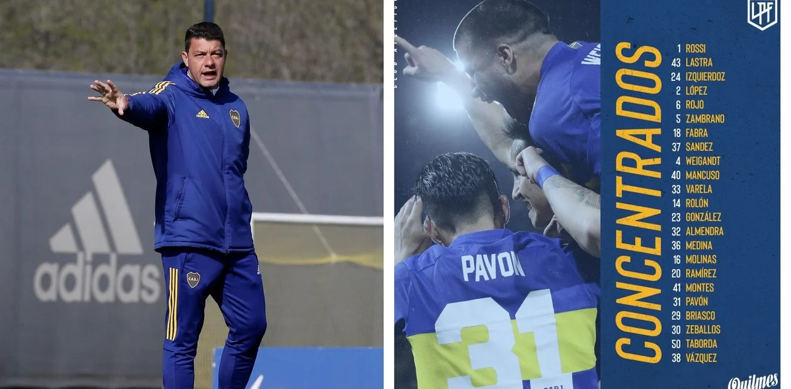

El DT de Boca anunció los convocados para enfrentar el sábado al Globo: vuelve Ramírez.
El técnico de Boca, Sebastián Battaglia, anunció la convocatoria para el partido que el Xeneize jugará ante Huracán, este sábado a las 20.15 en el Ducó, por la Liga Profesional. La novedad es el regreso de Juan Ramírez, recuperado de una lesión. En tanto, el Toto Salvio, con quien había una esperanza de regreso tras su rotura de ligamentos, sigue afuera.
Tampoco fue incluido Sebastián Villa, quien había sido suspendido por 15 días por el club, por regresar tarde desde Colombia.
Recordar, por desgarros, no estaban disponibles Luis Advíncula, Nicolás Orsini y Edwin Cardona. En cambio, está el peruano Zambrano, quien es parte del plantel de Ricardo Gareca en el match ante Argentina en el Monumental.
El probable equipo: Rossi; Weigandt, Izquierdoz, Rojo, Fabra; Montes, Rolón, Almendra; Molinas; Pavón y Vázquez.